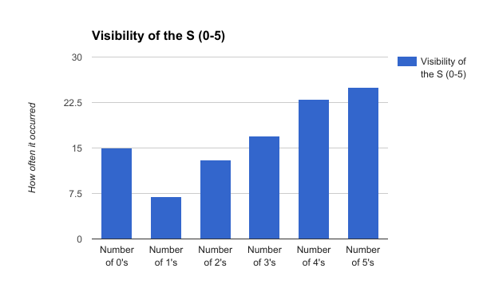

To collect the data we tried one skittle at a time until we had tasted 100 skittles and their qualities. Then we judged how the skittles tasted on a rating system 1-5. The qualities we judged were the visibility of the S, the condition of the shell and the juicness of the skittle. Here is a snippet of our data collection that we took.
Some patterns we found were the averages of visiblity of the S, condition of the shell and the juiciness of the skittle these are the averages: Visiblity: 2.9, Condition: 3.9, Juiciness 3.6. We then found how often each ranking occurred. For the visibility of the S we found there were: 15 zeros, 7 ones, 13 twos, 17 threes, 23 fours and 25 fives. For the condition of the shell there were: 2 zeros, 3 ones, 5 twos, 18 threes, 36 fours and 36 fives. Finally, for the juicness there were: 3 zeros, 1 one, 16 twos, 29 threes, 18 fours and 27 fives.
What makes the perfect skittle? That is the question that we asked at the beginning of this experiment, and now we have an answer. The results that we came up with is that 1 out of every 25 skittles will be “perfect”. Now, in saying this that means that there aren't very many perfect skittles per bag. Which also means that it's rare that we even got 4 in our bag! In conclusion we have discovered that the perfect skittle contains juicy contents, a clear S marking on the front and has a very good condition of the shell. So get your wallet out, drive to target and buy a huge 54oz bag and stuff your face with the rainbow!